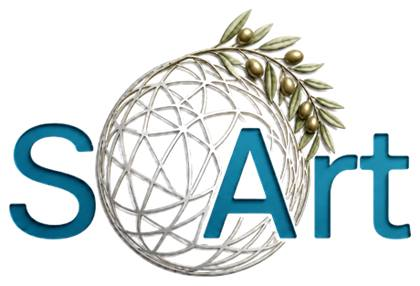

Community Art
Art created within community contexts, by and with community members, to strengthen belonging, voice, participation, and shared identity.

Our approach
SoArt is based on an integrative understanding of art as a living human, community, cultural, and systemic practice.
SoArt-Inspiration Framework
The SoArt-Inspiration framework sees art not as a separate aesthetic activity, but as an active practice through which people process experience, create meaning, shape identity, build capacity, and participate in changing their communities.
This is why SoArt connects personal healing with community creation, local practice with global learning, and field knowledge with research, policy, recognition, and collective action.
Four dimensions of action
Art created within community contexts, by and with community members, to strengthen belonging, voice, participation, and shared identity.
Creative processes that strengthen agency, resilience, self-expression, confidence, identity, and personal growth.
Art used intentionally as civic and activist action to influence public agendas, mobilize participation, and challenge social realities.
Art that opens dialogue, shifts narratives, creates empathy, and builds spaces of understanding between groups.
How the movement works
Knowledge, recognition, and impact
SoArt gives special importance to documentation, conceptualization, applied research, evaluation, and continuous learning. Knowledge created in local practice should become accessible, transferable, and useful for communities, practitioners, institutions, funders, and policy makers.
By strengthening recognition of art as a professional field of social action, SoArt seeks to integrate creative practice into education, health, welfare, community development, peacebuilding, cultural work, and social innovation.
Register interest